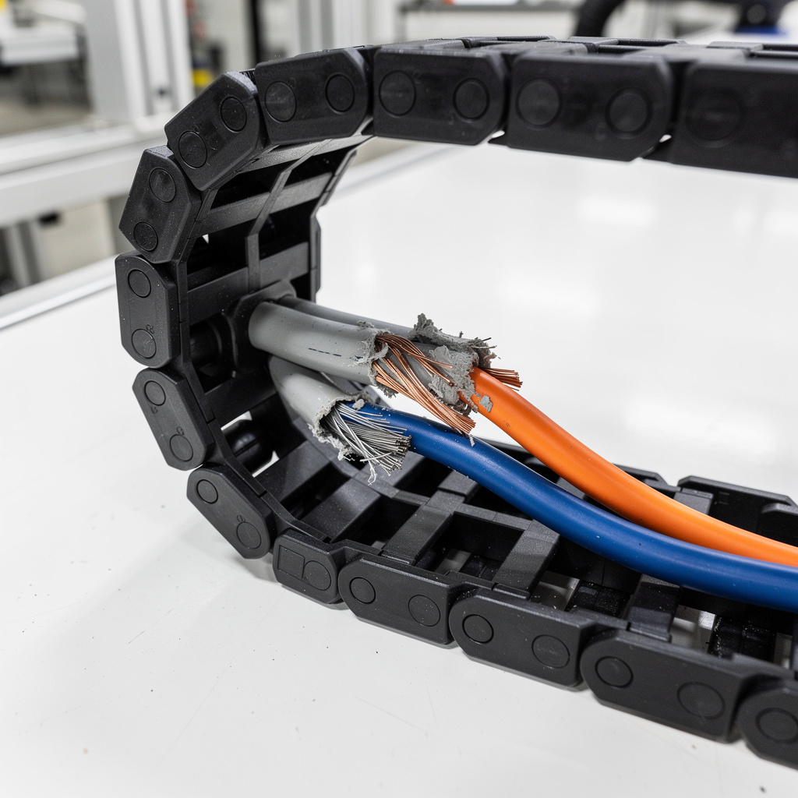

Panne I/O — Perte de communication esclave — Machine assemblage connecteurs
// Le Problème
Contexte : Ligne assemblage connecteurs automotive 32 broches. Production 180 pièces/heure, cycle 20 s. Poste 3 : serrage pince + insertion broches.
Symptôme : Arrêt total machine. Alarme 'Perte de communication esclave station 3' sur HMI Siemens TP1200. Tous les actionneurs station 3 passent en sécurité. Production arrêtée sur toute la ligne (pas de by-pass possible).
// Diagnostic
Étape 1 — HMI / Automate : CPU S7-1500 OK (RUN). Périphérie Profinet : esclave ET200SP station 3 en défaut. LED interface IM151-3 SF rouge + BF rouge clignotant. Perte de communication cyclique I/O sur 12 modules.
Étape 2 — Armoire station 3 : alimentation 24 V secteur OK (23,8 V mesuré). Alimentation 24 V charge capteurs/actionneurs : 0,3 V (court-circuit total). Disjoncteur 24 V 6 A déclenché. Tentative réarmage → re-déclenchement immédiat.
Étape 3 — Recherche CC : isolement voie par voie avec multimètre. Voie Q3 (sortie 24 V bobine électrovanne serrage pince) : 12 Ω vers 0 V (nominale bobine = 350 Ω). Déconnexion câble bobine → court-circuit persiste dans câble.
Étape 4 — Traçage câble : câble I/O station 3 (10 m, 12×0,5 mm² + 4×1 mm²) passe dans chemin de câble articulé portique 4 axes. À l'articulation coude (zone de flexion permanente) : gaine PUR extérieure entaillée sur 3 cm, conducteurs visibles. Deux conducteurs 1 mm² (L+ 24 V et 0 V bobine) écrasés/cisaillés entre les maillons du chemin de câble — contact direct métal → court-circuit franc 24 V.
Étape 5 — Conséquence en chaîne : court-circuit 24 V a surintensité la voie Q3 du module DO ET200SP (8DO 24 VDC/0,5 A) → fusion interne transistor de sortie + plombe voie. L'automate détecte défaut de charge sur Q3 puis coupe l'alim secteur du groupe I/O (sécurité intégrée) → perte totale communication esclave.
Étape 6 — Électrovanne : isolement bobine électrovanne mesurée : 12 Ω (au lieu de 350 Ω). Bobine humide/carbonisée interne (condensation entrée par évent de la bobine, usure joint torique). Non la cause initiale, mais endommagée par le CC.


// Solution apportée
// Résultat mesuré
Ligne redémarrée après 2 h d'arrêt (vs 6 h prévision constructeur pour diagnostic + déplacement pièces). Zéro perte communication depuis le redémarrage sur 4 h de production. 180 pièces/heure rétablies. Économie vs appel constructeur Siemens + sous-traitant câblage : ~2 800 € (déplacement 400 km Tanger-Casablanca + main d'œuvre spécialisée + majoration urgence week-end).